01 · 乔木、灌木与针叶树 (Trees, Shrubs & Conifers)
| 单词 (英 / 法性数完整形态) | 音标 (英 / 法 IPA) | 中文释义 | 英文定义 (WordNet) | 词频 | 实物配图 |
|---|---|---|---|---|---|
| pinele pinn.m.🇬🇧 pine | /pain//pɛ̃/ | n. 松树, 松木 | a coniferous tree | 4.1 | 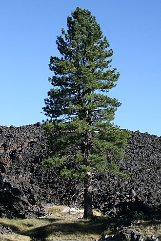 |
| cannabisle cannabisn.m.🇬🇧 cannabis | /'kænәbis//kanabis/ | n. 大麻 | any plant of the genus Cannabis; a coarse bushy annual with palmate leaves and clusters of small green flowers; yields tough fibers and narcotic drugs | 4.03 | 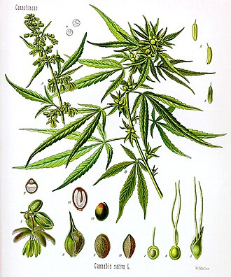 |
| sweet clover复合词le melilotusn.m.🇬🇧 sweet clover | /swi:t ˈkləʊvə//meliloty/ | 草木樨（属）; 草木犀 | erect annual or biennial plant grown extensively especially for hay and soil improvement | 3.95 | 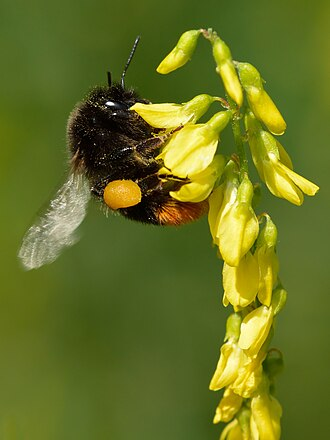 |
| hollyl'aquifoliaceaen.f.🇬🇧 holly | /'hɒli//akifoliazea/ | n. 冬青树 | any tree or shrub of the genus Ilex having red berries and shiny evergreen leaves with prickly edges | 3.88 | 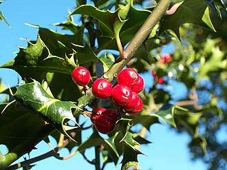 |
| woody plant复合词la plante ligneusen.f.🇬🇧 woody plant | /ˈwʊdi: plɑ:nt//plɑ̃t liɲøz/ | 木本植物 | a plant having hard lignified tissues or woody parts especially stems | 3.78 | 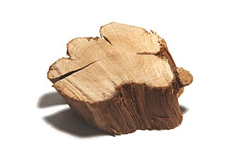 |
| nut pine复合词le pinn.m.🇬🇧 nut pine | /nʌt pain//pɛ̃/ | 瑞士五针松 | any of several pinons bearing edible nutlike seeds | 3.77 | 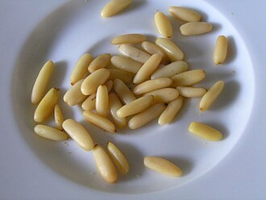 |
| cedarla cèdren.f.🇬🇧 cedar | /'si:dә//sɛdʁ/ | n. 雪松, 香椿 | any of numerous trees of the family Cupressaceae that resemble cedars | 3.76 | |
| heathla bruyèren.f.🇬🇧 heath | /hi:θ//bʁɥjɛʁ/ | n. 石南荒原, 低矮灌木 | a low evergreen shrub of the family Ericaceae; has small bell-shaped pink or purple flowers | 3.76 | 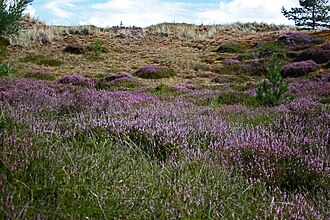 |
| cedar tree复合词la cèdren.f.🇬🇧 cedar tree | /ˈsi:də tri://sɛdʁ/ | 雪松 | any of numerous trees of the family Cupressaceae that resemble cedars | 3.73 | 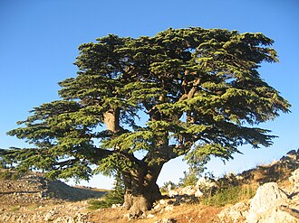 |
| crab apple复合词le pommiern.m.🇬🇧 crab apple | /kræb ˈæpl//pɔmje/ | n. 山楂子 | any of numerous varieties of crab apples cultivated for their small acidic (usually bright red) fruit used for preserves or as ornamentals for their blossoms | 3.72 |  |
| willowl'osiern.m.🇬🇧 willow | /'wilәu//ozje/ | n. 柳树, 柳木制品 | any of numerous deciduous trees and shrubs of the genus Salix | 3.69 | 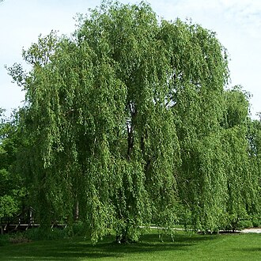 |
| sage brush复合词le boqueteaun.m.pl. boqueteaux🇬🇧 sage brush | /seɪdʒ brʌʃ//bɔkto/ | [医]北美艾灌丛 | any of several North American composite subshrubs of the genera Artemis or Seriphidium | 3.68 | 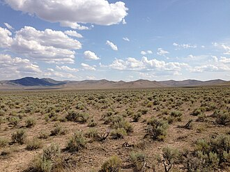 |
| willow tree复合词l'osiern.m.🇬🇧 willow tree | /ˈwiləu tri://ozje/ | 柳树 | any of numerous deciduous trees and shrubs of the genus Salix | 3.66 |  |
| laurella couronnen.f.🇬🇧 laurel | /'lɒ:rәl//kuʁɔn/ | n. 月桂树, 荣誉 | any of various aromatic trees of the laurel family | 3.63 | |
| jasminele jasminn.m.🇬🇧 jasmine | /'dʒæsmin//ʒasmɛ̃/ | n. 茉莉, 淡黄色 | any of several shrubs and vines of the genus Jasminum chiefly native to Asia | 3.61 | 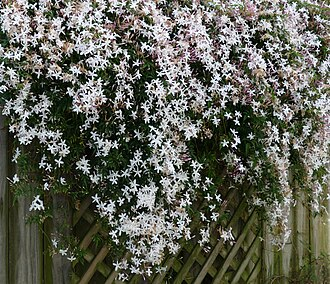 |
| scrub oak复合词la chênen.f.🇬🇧 scrub oak | /skrʌb əuk//ʃɛn/ | 胭脂栎 | any of various chiefly American small shrubby oaks often a dominant form on thin dry soils sometimes forming dense thickets | 3.61 | 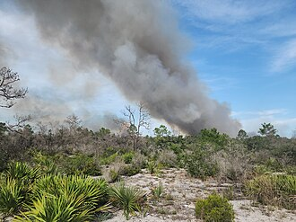 |
| feather palm复合词le palmiern.m.🇬🇧 feather palm | /ˈfeðə pɑ:m//palmje/ | 羽叶棕榈 | palm having pinnate or featherlike leaves | 3.58 | 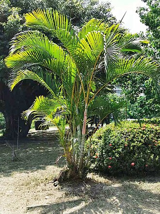 |
| walnut tree复合词la noixn.f.🇬🇧 walnut tree | /ˈwɔ:lnət tri://nwa/ | 核桃树胡桃树 | any of various trees of the genus Juglans | 3.58 | 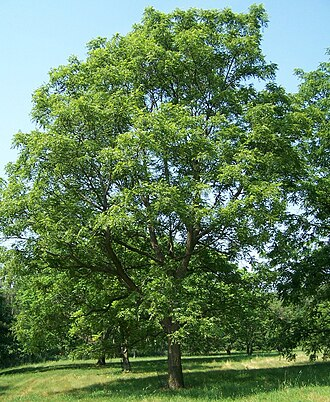 |
| meadow beauty复合词la beautén.f.🇬🇧 meadow beauty | /ˈmedəu ˈbju:ti//bote/ | 瑞克希阿属植物 | any of several plants of the genus Rhexia usually having pink-purple to magenta flowers; eastern North America | 3.57 | 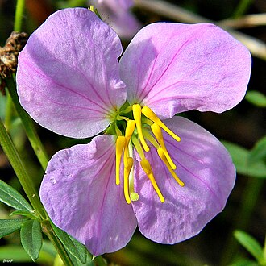 |
| ericale bruyèresn.m.🇬🇧 erica | /'erikә//bʁɥjɛʁ/ | n. 欧石南属植物 | any plant of the genus Erica | 3.56 | |
| flooded gum复合词le chewing-gumn.m.🇬🇧 flooded gum | /flʌdd gʌm//ʃwiŋgɔm/ | un. 野安树 | any of several Australian gum trees growing on moist or alluvial soil | 3.56 | 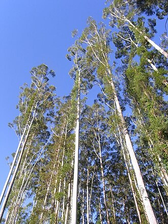 |
| plumla prunen.f.🇬🇧 plum | /plʌm//pʁyn/ | n. 李子 | any of several trees producing edible oval fruit having a smooth skin and a single hard stone | 3.55 |  |
| plum tree复合词la prunen.f.🇬🇧 plum tree | /plʌm tri://pʁyn/ | 李树 | any of several trees producing edible oval fruit having a smooth skin and a single hard stone | 3.53 | 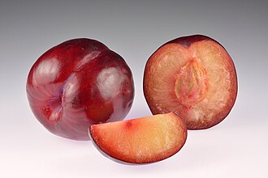 |
| ming tree复合词l'arbren.m.🇬🇧 ming tree | /miŋ tri://aʁbʁ/ | 明树 | an artificial plant resembling a bonsai | 3.52 | |
| pea tree复合词le caraganan.m.🇬🇧 pea tree | /pi: tri://kaʁaɡana/ | 锦鸡儿 | any plant of the genus Caragana having even-pinnate leaves and mostly yellow flowers followed by seeds in a linear pod | 3.52 | 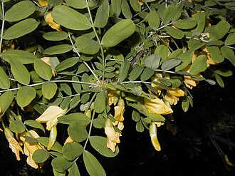 |
| almond tree复合词l'amandiern.m.🇬🇧 almond tree | /ˈɑ:mənd tri://amɑ̃dje/ | 扁桃 | any of several small bushy trees having pink or white blossoms and usually bearing nuts | 3.51 | 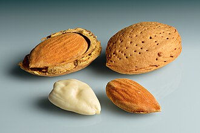 |
| flowering tree复合词l'arbren.m.🇬🇧 flowering tree | /ˈflaʊərɪŋ tri://aʁbʁ/ | 观花树木 | any tree having seeds and ovules contained in the ovary | 3.51 | |
| raspberryla framboisen.f.🇬🇧 raspberry | /'ræzbәri//fʁɑ̃bwaz/ | n. 悬钩子, 呸声 | woody brambles bearing usually red but sometimes black or yellow fruits that separate from the receptacle when ripe and are rounder and smaller than blackberries | 3.5 | 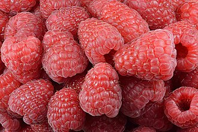 |
| arborl'arborn.m.🇬🇧 arbor | /'ɑ:bә//aʁboʁ/ | n. 藤架, 树, 心轴, 凉亭 | tree (as opposed to shrub) | 3.49 | |
| red raspberry复合词la framboisen.f.🇬🇧 red raspberry | /red ˈræzˌberi://fʁɑ̃bwaz/ | 覆盆子 | any of several raspberries bearing red fruit | 3.49 | 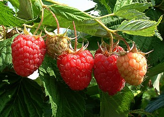 |
| birch-tree复合词le bouleaun.m.pl. bouleaux🇬🇧 birch-tree | /bә:tʃ tri://bulo/ | 桦树 | any betulaceous tree or shrub of the genus Betula having a thin peeling bark | 3.48 | 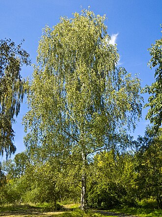 |
| cocoa bean复合词la fève de cacaon.f.🇬🇧 cocoa bean | /'kәukәu bi:n//fɛv də kakao/ | [化] 可可豆；[医] 可可豆 | seed of the cacao tree; ground roasted beans are source of chocolate | 3.48 | 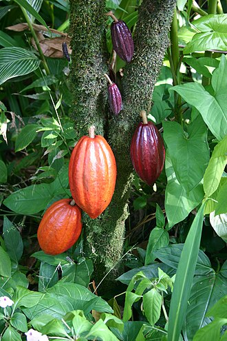 |
| glory pea复合词le clianthusn.m.🇬🇧 glory pea | /'glɒ:ri pi://kliɑ̃ty/ | un. 耀华豆 | any of various shrubs or vines of the genus Clianthus having compound leaves and pea-like red flowers in drooping racemes | 3.48 | 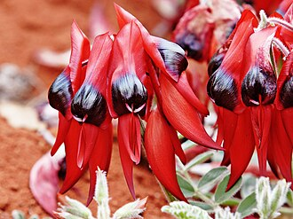 |
| fir tree复合词le sapinn.m.🇬🇧 fir tree | /fɜ: tri://sapɛ̃/ | 枞树, 杉树 | any of various evergreen trees of the genus Abies; chiefly of upland areas | 3.46 | 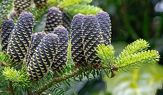 |
| silver fir复合词le sapin blancn.m.🇬🇧 silver fir | /ˈsilvə fɜ://sapɛ̃ blɑ̃/ | 银枞, 白枞 | any of various true firs having leaves white or silvery white beneath | 3.46 | 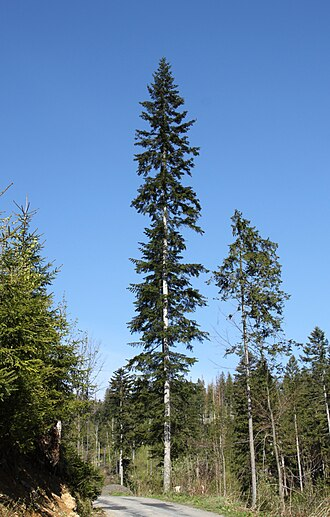 |
| thorn apple复合词la pommen.f.🇬🇧 thorn apple | /θɒ:n 'æpl//pɔm/ | [医] 曼陀罗 | any of several plants of the genus Datura | 3.46 | 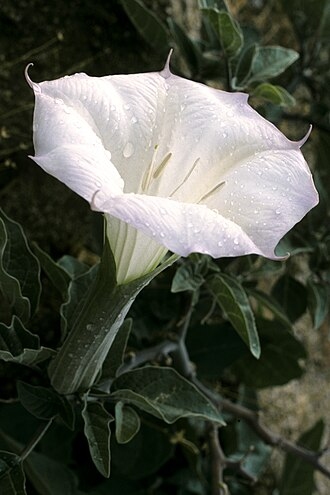 |
| joint fir复合词l'ephedran.m.🇬🇧 joint fir | /dʒɒint fә://efedʁa/ | [医] 麻黄 | jointed and nearly leafless desert shrub having reduced scalelike leaves and reddish fleshy seeds | 3.45 | 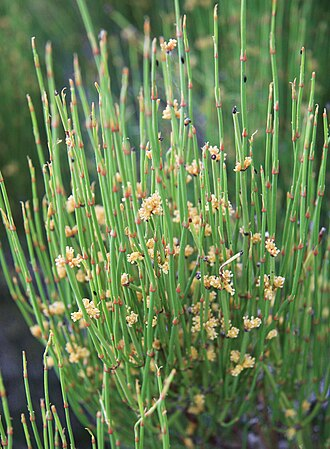 |
| chestnut tree复合词la châtaignen.f.🇬🇧 chestnut tree | /ˈtʃesˌnʌt tri://ʃatɛɲ/ | 栗树 | any of several attractive deciduous trees yellow-brown in autumn; yield a hard wood and edible nuts in a prickly bur | 3.44 | 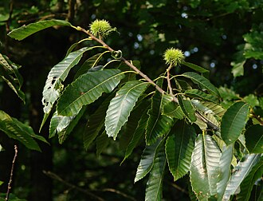 |
| flowering cherry复合词le sakuran.m.🇬🇧 flowering cherry | /'flauәriŋ 'tʃeri//sakyʁa/ | 【植物】(日本)樱花树 | any of several shrubs or trees of the genus Prunus cultivated for their showy white or pink single or double blossoms | 3.44 | 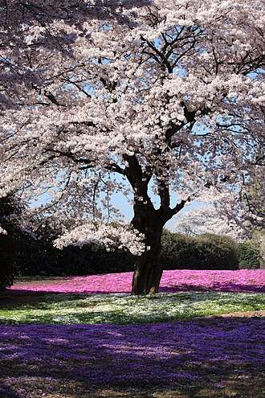 |
| lavenderla lavanden.f.🇬🇧 lavender | /'lævindә//lavɑ̃d/ | n. 熏衣草, 淡紫色 | any of various Old World aromatic shrubs or subshrubs with usually mauve or blue flowers; widely cultivated | 3.44 | 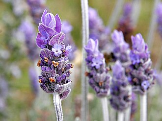 |
| witch hazel复合词le hamamélisn.m.🇬🇧 witch hazel | /witʃ ˈheɪzəl//amamelis/ | 北美金缕梅 | any of several shrubs or trees of the genus Hamamelis; bark yields an astringent lotion | 3.44 | 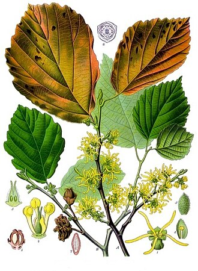 |
| aspenle peuplier faux-tremblen.m.🇬🇧 aspen | /'æspәn//pøplije fo tʁɑ̃bl/ | n. 山杨 | any of several trees of the genus Populus having leaves on flattened stalks so that they flutter in the lightest wind | 3.43 | 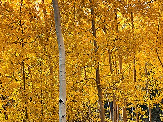 |
| darling pea复合词le petit poisn.m.🇬🇧 darling pea | /'dɑ:liŋ pi://pəti pwa/ | [医]苦马豆属 | either of two Australian plants of the genus Swainsona that are poisonous to sheep | 3.43 | 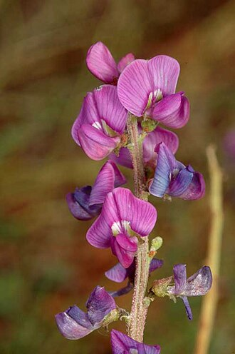 |
| sea lavender复合词la staticen.f.🇬🇧 sea lavender | /si: ˈlævəndə//stati/ | 勿忘我 | any of various plants of the genus Limonium of temperate salt marshes having spikes of white or mauve flowers | 3.43 | 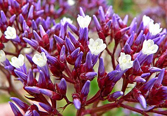 |
| blue curls复合词le trichosteman.m.🇬🇧 blue curls | /'blu:,kə:lz//tʁiʃostema/ | [复数, 用作单数或复数]【植物】毛茎属(Trichostema)植物；夏枯草(= selfheal) | any of several plants of the genus Trichostema having whorls of small blue flowers | 3.41 | 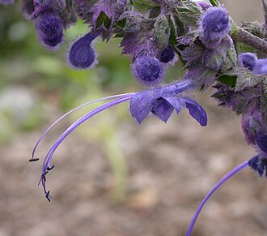 |
| thriftle thriftn.m.🇬🇧 thrift | /θrift//tʁif/ | n. 节约, 茂盛, 海石竹 | any of numerous sun-loving low-growing evergreens of the genus Armeria having round heads of pink or white flowers | 3.4 | 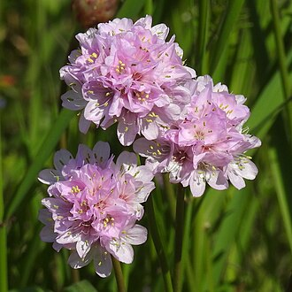 |
| elml'ormen.f.🇬🇧 elm | /elm//ɔʁm/ | n. 榆树 | any of various trees of the genus Ulmus: important timber or shade trees | 3.36 |  |
| elm tree复合词l'ormen.f.🇬🇧 elm tree | /elm tri://ɔʁm/ | n. 榆, 榆树 | any of various trees of the genus Ulmus: important timber or shade trees | 3.35 | 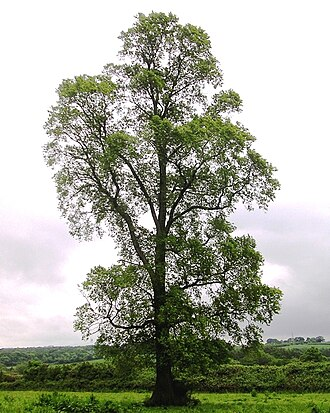 |
| bush clover复合词le lespedezan.m.🇬🇧 bush clover | /buʃ ˈkləʊvə//lespedeza/ | 胡枝子属 | shrubby or herbaceous plants widely used for forage, soil improvement, and especially hay in southern United States | 3.33 | 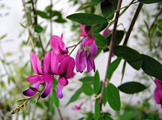 |
| apple tree复合词le pommiern.m.🇬🇧 apple tree | /ˈæpl tri://pɔmje/ | 苹果树 | any tree of the genus Malus especially those bearing firm rounded edible fruits | 3.32 | 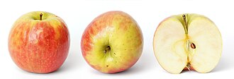 |
| blueberryle bleuetn.m.🇬🇧 blueberry | /'blu:bәri//bløɛ/ | n. 乌饭树 | any of numerous shrubs of the genus Vaccinium bearing blueberries | 3.3 | 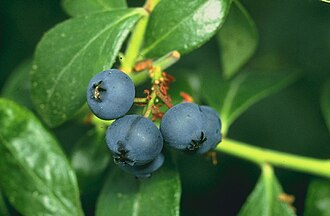 |
| wild indigo复合词le baptisian.m.🇬🇧 wild indigo | /waild 'indigәu//baptizia/ | [美国英语]【植物】 = baptisia | any of several plants of the genus Baptisia | 3.3 | 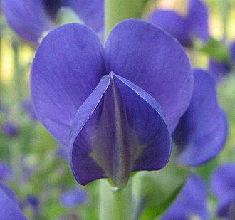 |
| false indigo复合词l'indigon.m.🇬🇧 false indigo | /fɒ:ls 'indigәu//ɛ̃digo/ | un. 假木兰 | any of several plants of the genus Baptisia | 3.29 | 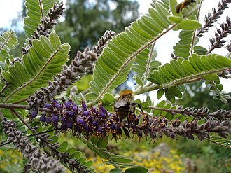 |
| beechle fagusn.m.🇬🇧 beech | /bi:tʃ//faɡy/ | n. 山毛榉 | any of several large deciduous trees with rounded spreading crowns and smooth grey bark and small sweet edible triangular nuts enclosed in burs; north temperate regions | 3.27 | 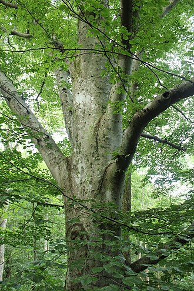 |
| beech tree复合词le fagusn.m.🇬🇧 beech tree | /bi:tʃ tri://faɡy/ | 山毛榉树 | any of several large deciduous trees with rounded spreading crowns and smooth grey bark and small sweet edible triangular nuts enclosed in burs; north temperate regions | 3.26 |  |
| daphnela daphnen.f.🇬🇧 daphne | /'dæfni//dafn/ | n. [植]瑞香；达芙妮（女名） | any of several ornamental shrubs with shiny mostly evergreen leaves and clusters of small bell-shaped flowers | 3.26 | 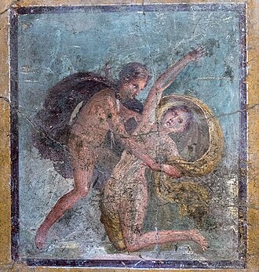 |
| fig tree复合词le figuiern.m.🇬🇧 fig tree | /fig tri://figje/ | 无花果树 | any moraceous tree of the tropical genus Ficus; produces a closed pear-shaped receptacle that becomes fleshy and edible when mature | 3.24 | 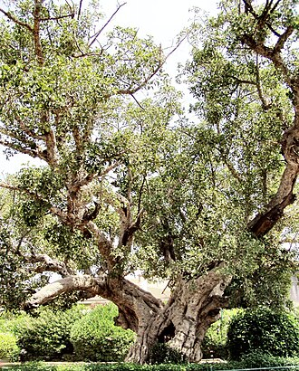 |
| fruit tree复合词l'arbre fruitiern.m.🇬🇧 fruit tree | /fru:t tri://aʁbʁ fʁɥitje/ | 果树 | tree bearing edible fruit | 3.24 | 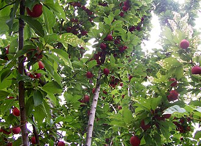 |
| live oak复合词la chênen.f.🇬🇧 live oak | /liv əuk//ʃɛn/ | n. 槲树, 槲树类树木 | any of several American evergreen oaks | 3.24 | 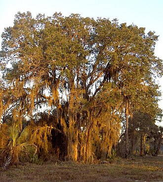 |
| wax myrtle复合词le myrican.m.🇬🇧 wax myrtle | /wæks ˈmə:tl//miʁika/ | n. 杨梅属之植物 | any shrub or small tree of the genus Myrica with aromatic foliage and small wax-coated berries | 3.24 | 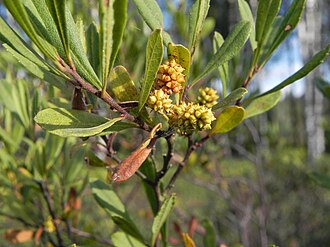 |
| yellow pine复合词l'yellow pinen.m.🇬🇧 yellow pine | /ˈjeləu pain//ielow pin/ | n. 黄松, 黄松木; 短叶松 | any of various pines having yellow wood | 3.24 | 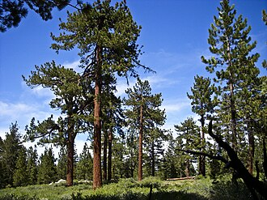 |
| hawthornl'aubépinen.f.🇬🇧 hawthorn | /'hɒ:θɒ:n//obepin/ | n. 山楂 | a spring-flowering shrub or small tree of the genus Crataegus | 3.23 | |
| pollardle pollardn.m.🇬🇧 pollard | /'pɒlәd//polaʁ/ | n. 无角(截去角)的动物, 截去树梢的树, 麸皮 | a tree with limbs cut back to promote a more bushy growth of foliage | 3.23 | |
| milk thistle复合词le sonchusn.m.🇬🇧 milk thistle | /milk 'θisl//sɔ̃ʃy/ | 奶蓟草 | any of several Old World coarse prickly-leaved shrubs and subshrubs having milky juice and yellow flowers; widely naturalized; often noxious weeds in cultivated soil | 3.22 | |
| ash tree复合词la frênen.f.🇬🇧 ash tree | /æʃ tri://fʁɛn/ | 树, 灰树（一种白蜡树） | any of various deciduous pinnate-leaved ornamental or timber trees of the genus Fraxinus | 3.2 | |
| bean tree复合词l'arbren.m.🇬🇧 bean tree | /bi:n tri://aʁbʁ/ | 红豆；豆荚木 | any of several trees having seedpods as fruits | 3.2 | |
| bird cherry复合词le bois-puantn.m.🇬🇧 bird cherry | /bə:d ˈtʃeri://bwa pɥɑ̃/ | 稠李 | any of several small-fruited cherry trees frequented or fed on by birds | 3.2 | |
| bottle tree复合词l'arbren.m.🇬🇧 bottle tree | /'bɒtl tri://aʁbʁ/ | 格雷戈里氏猴面包树; 澳洲梧桐树; 瓶木属 | an Australian tree of the genus Brachychiton | 3.2 | |
| burning bush复合词le buisson ardentn.m.🇬🇧 burning bush | /ˈbɜ:nɪŋ buʃ//bɥisɔ̃ aʁdɑ̃/ | 燃烧灌木 | (Old Testament) the bush that burned without being consumed and from which God spoke to Moses | 3.2 | |
| butterfly bush复合词l'arbrisseaun.m.pl. arbrisseaux🇬🇧 butterfly bush | /'bʌtәflai buʃ//aʁbʁiso/ | = buddleia | tropical shrub having clusters of white or violet or yellow flowers | 3.2 | |
| cherry tree复合词la cerisen.f.🇬🇧 cherry tree | /'tʃeri tri://səʁiz/ | [机] 樱木 | any of numerous trees and shrubs producing a small fleshy round fruit with a single hard stone; many also produce a valuable hardwood | 3.2 | |
| coffee tree复合词le cafén.m.🇬🇧 coffee tree | /'kɒfi tri://kafe/ | 咖啡树 | any of several small trees and shrubs native to the tropical Old World yielding coffee beans | 3.2 | |
| coral tree复合词l'erythrinan.m.🇬🇧 coral tree | /'kɒrәl tri://eʁitʁina/ | 珊瑚树; 刺桐 | any of various shrubs or shrubby trees of the genus Erythrina having trifoliate leaves and racemes of scarlet to coral red flowers and black seeds; cultivated as an ornamental | 3.2 | |
| cotton plant复合词le cotonn.m.🇬🇧 cotton plant | /ˈkɔtən plɑ:nt//kɔtɔ̃/ | n. 棉树，棉株; 草棉 | erect bushy mallow plant or small tree bearing bolls containing seeds with many long hairy fibers | 3.2 | |
| deer grass复合词l'herben.f.🇬🇧 deer grass | /diә græs//ɛʁb/ | 瑞克希阿(Trichophorum caespitosum) | any of several plants of the genus Rhexia usually having pink-purple to magenta flowers; eastern North America | 3.2 | |
| fan palm复合词le lataniern.m.🇬🇧 fan palm | /fæn pɑ:m//latani/ | 蒲葵，扇形棕榈 | palm having palmate or fan-shaped leaves | 3.2 | |
| fever tree复合词le vachellia xanthophloean.m.🇬🇧 fever tree | /ˈfi:və tri://vaʃelia xɑ̃tofloea/ | 金鸡纳树 | any of several trees having leaves or bark used to allay fever or thought to indicate regions free of fever | 3.2 | |
| fringe tree复合词le chionanthusn.m.🇬🇧 fringe tree | /frindʒ tri://ʃionɑ̃ty/ | 美国流苏树 | any of various small decorative flowering trees or shrubs of the genus Chionanthus | 3.2 | |
| gum tree复合词la genciven.f.🇬🇧 gum tree | /ɡʌm tri://ʒɑ̃siv/ | n. 产树胶的树 | any of various trees of the genera Eucalyptus or Liquidambar or Nyssa that are sources of gum | 3.2 | |
| heart cherry复合词la cerisen.f.🇬🇧 heart cherry | /hɑ:t ˈtʃeri://səʁiz/ | 欧洲甜樱桃，西班牙樱桃 | any of several cultivated sweet cherries having sweet juicy heart-shaped fruits | 3.2 | |
| iron tree复合词l'arbren.m.🇬🇧 iron tree | /ˈaiən tri://aʁbʁ/ | 铁木 | a small slow-growing deciduous tree of northern Iran having a low domed shape | 3.2 | |
| lady palm复合词le rhapisn.m.🇬🇧 lady palm | /ˈleidi pɑ:m//ʁapi/ | 棕竹 | any of several small palms of the genus Rhapis; cultivated as houseplants | 3.2 | |
| mountain ash复合词la cendren.f.🇬🇧 mountain ash | /'mauntin æʃ//sɑ̃dʁ/ | n. 花楸树 | any of various trees of the genus Sorbus | 3.2 | |
| nut tree复合词l'arbren.m.🇬🇧 nut tree | /nʌt tri://aʁbʁ/ | n. 坚果树（尤指榛树） | tree bearing edible nuts | 3.2 | |
| oak tree复合词la chênen.f.🇬🇧 oak tree | /əuk tri://ʃɛn/ | 橡树; 柞树 | a deciduous tree of the genus Quercus; has acorns and lobed leaves | 3.2 | |
| oil palm复合词le palmier à huilen.m.🇬🇧 oil palm | /ɔil pɑ:m//palmje a ɥil/ | 油椰子 | pinnate-leaved palms of the genus Elaeis having dense clusters of crowded flowers and bright red fruit and yielding high quality palm oils | 3.2 | |
| olive tree复合词l'oliviern.m.🇬🇧 olive tree | /ˈɔliv tri://ɔlivje/ | 油橄榄树 | a tree of the genus Olea cultivated for its fruit | 3.2 |  |
| palm tree复合词le palmiern.m.🇬🇧 palm tree | /pɑ:m tri://palmje/ | n. 棕榈树 | any plant of the family Palmae having an unbranched trunk crowned by large pinnate or palmate leaves | 3.2 | |
| pine tree复合词le pinn.m.🇬🇧 pine tree | /pain tri://pɛ̃/ | n. 松树 | a coniferous tree | 3.2 |  |
| plane tree复合词la platanen.f.🇬🇧 plane tree | /plein tri://platan/ | [计] 平面树, 有序树 | any of several trees of the genus Platanus having thin pale bark that scales off in small plates and lobed leaves and ball-shaped heads of fruits | 3.2 | |
| poison bush复合词le gastrolobiumn.m.🇬🇧 poison bush | /ˈpɔizən buʃ//ɡastʁolobiym/ | 含毒汁的紫龙骨豆或属相近的齿荚豆属的豆科植物，沙漠苦槛兰，光叶山黄麻 | any of various Australian evergreen shrubs of the genus Gastrolobium having whorled compound leaves poisonous to livestock and showy yellow to deep reddish-orange flowers followed by two-seeded pods | 3.2 | |
| red oak复合词la chênen.f.🇬🇧 red oak | /red əuk//ʃɛn/ | 红橡木 | any of numerous American oaks having 4 stamens in each floret, acorns requiring two years to mature and leaf veins usually extending beyond the leaf margin to form points or bristles | 3.2 |  |
| rock rose复合词le rosiern.m.🇬🇧 rock rose | /rɔk rəuz//ʁozje/ | 沙漠座莲 | any of numerous varieties of helianthemums having small rose-like yellow or white or reddish flowers | 3.2 | |
| screw pine复合词le pandanusn.m.🇬🇧 screw pine | /skru: pain//pɑ̃dany/ | n. 露兜树属植物（产于东南亚） | any of various Old World tropical palmlike trees having huge prop roots and edible conelike fruits and leaves like pineapple leaves | 3.2 | |
| shade tree复合词l'arbre d'ombragen.m.🇬🇧 shade tree | /ʃeid tri://aʁbʁ dɔ̃bʁaʒ/ | n. 能遮荫的树; 行道树 | a tree planted or valued chiefly for its shade from sunlight | 3.2 | |
| silk oak复合词le grevillea robustan.m.🇬🇧 silk oak | /silk әuk//ɡʁeviʒea ʁɔbysta/ | = silky oak | any of several Australian timber trees having usually fernlike foliage and mottled wood used in cabinetry and veneering | 3.2 | |
| silver bell复合词la clochen.f.🇬🇧 silver bell | /'silvә bel//klɔʃ/ | 银铃; 银钟花木 | any of various deciduous trees of the genus Halesia having white bell-shaped flowers | 3.2 | |
| smoke tree复合词l'arbren.m.🇬🇧 smoke tree | /sməuk tri://aʁbʁ/ | 黄栌 | any of several shrubs or shrubby trees of the genus Cotinus | 3.2 | |
| staff tree复合词le celastrusn.m.🇬🇧 staff tree | /stɑ:f tri://selastʁy/ | n. 【植】南蛇藤属 植物 | any small tree or twining shrub of the genus Celastrus | 3.2 | |
| timber tree复合词l'arbren.m.🇬🇧 timber tree | /ˈtimbə tri://aʁbʁ/ | 成材木 | any tree that is valued as a source of lumber or timber | 3.2 | |
| tree tomato复合词le tamarillon.m.🇬🇧 tree tomato | /tri: tә'mɑ:tәu//tamaʁiʒo/ | = tamarillo | South American arborescent shrub having pale pink blossoms followed by egg-shaped reddish-brown edible fruit somewhat resembling a tomato in flavor | 3.2 | |
| white oak复合词la chêne blancn.f.🇬🇧 white oak | /hwait əuk//ʃɛn blɑ̃/ | n. 白栎, 白栎木 | any of numerous Old World and American oaks having 6 to 8 stamens in each floret, acorns that mature in one year and leaf veins that never extend beyond the margin of the leaf | 3.2 | |
| white pine复合词la taxinomie du genre pinusn.f.🇬🇧 white pine | /hwait pain//taksinɔmi dy ʒɑ̃ʁ piny/ | n. 美国五针松; 雪松 | any of several five-needled pines with white wood and smooth usually light grey bark when young; especially the eastern white pine | 3.2 | |
| wild apple复合词le pommiern.m.🇬🇧 wild apple | /waild ˈæpl//pɔmje/ | 野苹果 | any of numerous wild apple trees usually with small acidic fruit | 3.2 | |
| wing nut复合词la coquen.f.🇬🇧 wing nut | /wiŋ nʌt//kɔk/ | [机] 翼形螺帽 | any tree of the genus Pterocarya; fruit is a small winged nutlet; Caucasus to southeastern Asia | 3.2 | |
| shrubl'arbrisseaun.m.pl. arbrisseaux🇬🇧 shrub | /ʃrʌb//aʁbʁiso/ | n. 矮树, 灌木, 果汁甜酒 | a low woody perennial plant usually having several major stems | 3.19 | |
| cranberryl'airellen.f.🇬🇧 cranberry | /'krænbәri//ɛʁɛl/ | n. 越橘 | any of numerous shrubs of genus Vaccinium bearing cranberries | 3.17 | |
| custard apple复合词la pommen.f.🇬🇧 custard apple | /ˈkʌstəd ˈæpl//pɔm/ | 南美洲番荔枝 | any of several tropical American trees bearing fruit with soft edible pulp | 3.16 | |
| incense cedar复合词le calocedrusn.m.🇬🇧 incense cedar | /ˈinsens ˈsi:də//kalozedʁy/ | 翠柏 | any of several attractive trees of southwestern South America and New Zealand and New Caledonia having glossy evergreen leaves and scented wood | 3.15 | |
| mulberryla mûren.f.🇬🇧 mulberry | /'mʌlbәri//myʁ/ | n. 桑树, 桑椹, 深紫红色 | any of several trees of the genus Morus having edible fruit that resembles the blackberry | 3.15 | |
| mulberry tree复合词la mûren.f.🇬🇧 mulberry tree | /'mʌlbәri tri://myʁ/ | un. 桑属 | any of several trees of the genus Morus having edible fruit that resembles the blackberry | 3.14 |  |
| lilacle lilasn.m.🇬🇧 lilac | /'lailәk//lila/ | n. 丁香, 丁香花, 淡紫色 | any of various plants of the genus Syringa having large panicles of usually fragrant flowers | 3.11 | |
| hawl'aubépinen.f.🇬🇧 haw | /hɒ://obepin/ | n. 山楂, 吆喝牲畜左转, 呃, 瞬膜 | a spring-flowering shrub or small tree of the genus Crataegus | 3.1 | |
| spindle tree复合词le fusainn.m.🇬🇧 spindle tree | /'spindl tri://fyzɛ̃/ | [医] 美卫矛 | any shrubby trees or woody vines of the genus Euonymus having showy usually reddish berries | 3.09 | |
| azaleal'azalean.m.🇬🇧 azalea | /ә'zeiljә//azalea/ | n. 杜鹃花 | any of numerous ornamental shrubs grown for their showy flowers of various colors | 3.05 | |
| flowering shrub复合词l'arbrisseaun.m.pl. arbrisseaux🇬🇧 flowering shrub | /ˈflaʊərɪŋ ʃrʌb//aʁbʁiso/ | 观花灌水 | shrub noted primarily for its flowers | 3.03 |  |
| acacial'acacian.m.🇬🇧 acacia | /ә'keiʃә//akasja/ | n. 洋槐, 刺槐, 阿拉伯树胶 | any of various spiny trees or shrubs of the genus Acacia | 3.01 | |
| prickly ash复合词la cendren.f.🇬🇧 prickly ash | /ˈprɪkli: æʃ//sɑ̃dʁ/ | 美洲花椒 | any of a number of trees or shrubs of the genus Zanthoxylum having spiny branches | 3.0 | |
| sow thistle复合词le sonchusn.m.🇬🇧 sow thistle | /səu ˈθɪsəl//sɔ̃ʃy/ | n. 苣苦菜 | any of several Old World coarse prickly-leaved shrubs and subshrubs having milky juice and yellow flowers; widely naturalized; often noxious weeds in cultivated soil | 3.0 | |
| locust tree复合词la carouben.f.🇬🇧 locust tree | /ˈləʊkəst tri://kaʁub/ | 刺槐，洋槐; 槐树 | any of various hardwood trees of the family Leguminosae | 2.99 | |
| apricotl'abricotn.m.🇬🇧 apricot | /'eiprikɒt//abʁiko/ | n. 杏子, 杏树, 杏黄色 | Asian tree having clusters of usually white blossoms and edible fruit resembling the peach | 2.98 | |
| deciduous holly复合词l'aquifoliaceaen.f.🇬🇧 deciduous holly | /di'sidjuәs 'hɒli//akifoliazea/ | =black alder | a holly tree | 2.96 | |
| sennale sennan.m.🇬🇧 senna | /'senә//sɑ̃na/ | n. 山扁豆, 番泻叶, 轻泻剂 | any of various plants of the genus Senna having pinnately compound leaves and showy usually yellow flowers; many are used medicinally | 2.94 | |
| tangerinela mandarinen.f.🇬🇧 tangerine | /.tændʒә'ri:n//mɑ̃daʁin/ | n. 柑橘 | a variety of mandarin orange | 2.94 | |
| caperle câpriern.m.🇬🇧 caper | /'keipә//kapʁije/ | n. 跳跃 | any of numerous plants of the genus Capparis | 2.86 | |
| lupinle lupinn.m.🇬🇧 lupin | /'lu:pin//lypɛ̃/ | n. 羽扇豆,(美作：lupine) | any plant of the genus Lupinus; bearing erect spikes of usually purplish-blue flowers | 2.86 | |
| bonsaile ^n.m.🇬🇧 bonsai | /'bɔnsai//^/ | n. [日]盆栽 | a dwarfed ornamental tree or shrub grown in a tray or shallow pot | 2.79 | |
| hazelnutle noisetiern.m.🇬🇧 hazelnut | /'heizlnʌt//nwaztje/ | n. 榛实 | any of several shrubs or small trees of the genus Corylus bearing edible nuts enclosed in a leafy husk | 2.78 | |
| hibiscusl'hibiscusn.m.🇬🇧 hibiscus | /hai'biskәs//ibiskys/ | n. 木槿 | any plant of the genus Hibiscus | 2.76 | |
| huckleberryle huckleberryn.m.🇬🇧 huckleberry | /'hʌklbәri//yklebeʁi/ | n. 黑果木 | any of various dark-fruited as distinguished from blue-fruited blueberries | 2.74 | |
| mesquitela mesquiten.f.🇬🇧 mesquite | /'meski:t//meski/ | n. 豆科灌木（产于美国西南部和墨西哥） | any of several small spiny trees or shrubs of the genus Prosopis having small flowers in axillary cylindrical spikes followed by large pods rich in sugar | 2.73 | |
| palmettole palmetton.m.🇬🇧 palmetto | /pæl'metәu//palmeto/ | n. 美洲蒲葵 | any of several low-growing palms with fan-shaped leaves | 2.72 | |
| fuchsiale fuchsian.m.🇬🇧 fuchsia | /fju:ʃә//fyʃja/ | n. 倒挂金钟属植物 | any of various tropical shrubs widely cultivated for their showy drooping purplish or reddish or white flowers; Central and South America and New Zealand and Tahiti | 2.69 | |
| honeysucklele camérisiern.m.🇬🇧 honeysuckle | /'hʌnisʌkl//kameʁizi/ | n. 忍冬, 杜鹃花 | shrub or vine of the genus Lonicera | 2.67 | |
| yuccal'yuccan.m.🇬🇧 yucca | /'jʌkә//juka/ | n. 丝兰 | any of several evergreen plants of the genus Yucca having usually tall stout stems and a terminal cluster of white flowers; warmer regions of North America | 2.65 | |
| wormwoodl'absinthen.f.🇬🇧 wormwood | /'wә:mwud//apsɛ̃t/ | n. 苦艾, 苦恼 | any of several low composite herbs of the genera Artemisia or Seriphidium | 2.6 | |
| coniferl'arbre résineuxn.m.🇬🇧 conifer | /'kɒnifә//aʁbʁ ʁezinø/ | n. 松柏目植物, 针叶树 | any gymnospermous tree or shrub bearing cones | 2.59 | |
| bramblela roncen.f.🇬🇧 bramble | /'bræmbl//ʁɔ̃s/ | n. 荆棘, 悬钩子属植物, 黑莓 | any of various rough thorny shrubs or vines | 2.56 | |
| dogwoodle cornouillern.m.🇬🇧 dogwood | /'dɒgwud//koʁnyʒ/ | n. 山茱萸科植物 | a tree of shrub of the genus Cornus often having showy bracts resembling flowers | 2.56 | |
| nightshadela belladonen.f.🇬🇧 nightshade | /'naitʃeid//beladɔn/ | n. 茄属植物 | any of numerous shrubs or herbs or vines of the genus Solanum; most are poisonous though many bear edible fruit | 2.55 | |
| persimmonle kakin.m.🇬🇧 persimmon | /pә'simәn//kaki/ | n. 柿子(树) | any of several tropical trees of the genus Diospyros | 2.54 | |
| macadamiale macadamian.m.🇬🇧 macadamia | /,mækә'deimiә//makadamia/ | n. 〈植〉澳大利亚坚果 | any tree of the genus Macadamia | 2.53 | |
| camelliale camellian.m.🇬🇧 camellia | /kә'mi:ljә//kamelia/ | n. 山茶花, 山茶(树) | any of several shrubs or small evergreen trees having solitary white or pink or reddish flowers | 2.52 | |
| rhododendronle rhododendronn.m.🇬🇧 rhododendron | /.rәudә'dendrәn//ʁɔdɔdɛ̃dʁɔ̃/ | n. 杜鹃 | any shrub of the genus Rhododendron: evergreen shrubs or small shrubby trees having leathery leaves and showy clusters of campanulate (bell-shaped) flowers | 2.52 | |
| cassiale cassian.m.🇬🇧 cassia | /'kæsiә//kazia/ | n. 肉桂 | any of various trees or shrubs of the genus Cassia having pinnately compound leaves and usually yellow flowers followed by long seedpods | 2.51 | |
| capsicumle capsicumn.m.🇬🇧 capsicum | /'kæpsikәm//kapsikym/ | n. 辣椒 | any of various tropical plants of the genus Capsicum bearing peppers | 2.49 | |
| saplingl'arbusten.m.🇬🇧 sapling | /'sæpliŋ//aʁbyst/ | n. 树苗, 小树 | young tree | 2.48 | |
| gardeniale gardenian.m.🇬🇧 gardenia | /gɑ:'di:njә//ɡaʁdenia/ | n. 栀子 | any of various shrubs and small trees of the genus Gardenia having large fragrant white or yellow flowers | 2.43 | |
| artemisial'armoisen.f.🇬🇧 artemisia | /,ɑ:ti'mi:ziә//aʁmwa/ | n. [植]艾属, 艾 | any of various composite shrubs or herbs of the genus Artemisia having aromatic green or greyish foliage | 2.41 |